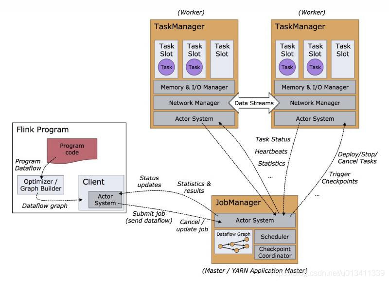
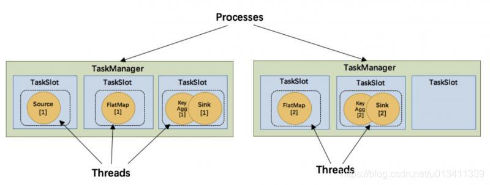

角色

主要有 TaskManager，JobManager，Client三种角色。
1、Client是Flink程序提交的客户端，当用户提交一个Flink程序时，会首先创建一个Client，该Client首先会对用户提交的Flink程序进行预处理，并提交到Flink集群中处理，所以Client需要从用户提交的Flink程序配置中获取JobManager的地址，并建立到JobManager的连接，将Flink Job提交给JobManager。
2、JobManager扮演着集群中的管理者Master的角色，它是整个集群的协调者，负责接收Flink Job，协调检查点，Failover 故障恢复等，同时管理Flink集群中从节点TaskManager。
3、TaskManager是实际负责执行计算的Worker，在其上执行Flink Job的一组Task，每个TaskManager负责管理其所在节点上的资源信息，如内存、磁盘、网络，在启动的时候将资源的状态向JobManager汇报。

TaskManager是实际负责执行计算的Worker，TaskManager 是一个 JVM 进程，并会以独立的线程来执行一个task或多个subtask。为了控制一个 TaskManager 能接受多少个 task，Flink 提出了 Task Slot 的概念。
简单的说，TaskManager会将自己节点上管理的资源分为不同的Slot：固定大小的资源子集。这样就避免了不同Job的Task互相竞争内存资源，但是需要主要的是，Slot只会做内存的隔离。没有做CPU的隔离。
执行计划
env.getExecutionPlan 返回任务的执行计划，结构是json，粘贴到https://flink.apache.org/visualizer/flink的可视化官网可以看到流程图
StreamGraph -> JobGraph -> ExecutionGraph -> 物理执行图
StreamGraph, JobGraph 这两个执行图在 client 端生成。ExecutionGraph 在 JobManager 中生成。
Client 向 JobManager 提交 JobGraph 后， JobManager 就会根据 JobGraph 来创建对应的 ExecutionGraph,并以此来调度任务。
源码:StreamingJobGraphGenerator 就是讲StreamGraph转换为JobGraph
ExecutionGraphBuilder.buildGraph 构建ExecutionGraph
SchedulerBase
StreamGraph：是根据用户通过 Stream API 编写的代码生成的最初的图。用来表示程序的拓扑结构。
JobGraph：StreamGraph经过优化后生成了 JobGraph，然后提交给 JobManager 的数据结构。主要的优化为，将多个符合条件的节点 串联 在一起作为一个节点，这样可以减少数据在节点之间流动所需要的序列化/反序列化/传输消耗。
ExecutionGraph：JobManager 根据 JobGraph 生成ExecutionGraph。ExecutionGraph是JobGraph的并行化版本，是调度层最核心的数据结构。
物理执行图：JobManager 根据 ExecutionGraph 对 Job 进行调度后，在各个TaskManager 上部署 Task 后形成的“图”，并不是一个具体的数据结构。
https://blog.jrwang.me/2019/flink-source-code-executiongraph/
Operator Chains
来源：https://blog.csdn.net/u013343882/article/details/82355860
为了更高效地分布式执行，Flink会尽可能地将operator的subtask链接（chain）在一起形成task。每个task在一个线程中执行。将operators链接成task是非常有效的优化：它能减少线程之间的切换，减少消息的序列化/反序列化，减少数据在缓冲区的交换，减少了延迟的同时提高整体的吞吐量。
我们以经典的 WordCount 为例，下面这幅图，展示了Source并行度为1，FlatMap、KeyAggregation、Sink并行度均为2，最终以5个并行的线程来执行的优化过程。
上图中将KeyAggregation和Sink两个operator进行了合并，因为这两个合并后并不会改变整体的拓扑结构。但是，并不是任意两个 operator 就能 chain 一起的。其条件还是很苛刻的：
1、上下游的并行度一致
2、下游节点的入度为1 （也就是说下游节点没有来自其他节点的输入）
3、上下游节点都在同一个 slot group 中（下面会解释 slot group）
4、下游节点的 chain 策略为 ALWAYS（可以与上下游链接，map、flatmap、filter等默认是ALWAYS）
5、上游节点的 chain 策略为 ALWAYS 或 HEAD（只能与下游链接，不能与上游链接，Source默认是HEAD）
6、两个节点间数据分区方式是 forward
7、用户没有禁用 chain
Operator chain的行为可以通过编程API中进行指定。可以通过在DataStream的operator后面（如someStream.map(..))调用startNewChain()来指示从该operator开始一个新的chain（与前面截断，不会被chain到前面）。或者调用disableChaining()来指示该operator不参与chaining（不会与前后的operator chain一起）。在底层，这两个方法都是通过调整operator的 chain 策略（HEAD、NEVER）来实现的。另外，也可以通过调用StreamExecutionEnvironment.disableOperatorChaining()来全局禁用chaining。
key的指定方法
1、根据字段位置。主要对tuple类型，pojo类会出错；不能指定嵌套里面的位置
2、根据字段名称，主要是pojo类。但是对sum这种聚合函数都可以指定字段位置和名称，如果是位置则是从0开始
3、自定义keyselector
不能作为key的：
1、POJO类型但不覆盖hashCode（）方法并依赖于Object.hashCode（）实现
2、任何类型的数组
用户代码的process function中改变了keyby的key的值会导致窗口状态无法清理
在keyby的时候key一定要是不变量，不然有可能导致状态无法清理。还有就是在分布式系统中，大量使用不变量是规避风险的最佳途径之一。
operates
KeyedStream
KeyedStream用来表示根据指定的key进行分组的数据流。一个KeyedStream可以通过调用DataStream.keyBy()来获得。
而在KeyedStream上进行任何transformation都将转变回DataStream。
在实现中，KeyedStream是把key的信息写入到了transformation中。每条记录只能访问所属key的状态，其上的聚合函数可以方便地操作和保存对应key的状态。
Window
用来对一个无限的流设置一个有限的集合，在有界的数据集上进行操作的一种机制。
window 又可以分为基于时间（Time-based）的 window 以及基于数量（Count-based）的 window。
WindowedStream
WindowedStream代表了根据key分组，并且基于WindowAssigner切分窗口的数据流。所以WindowedStream都是从KeyedStream衍生而来的。而在WindowedStream上进行任何transformation也都将转变回DataStream。
=======》即，一般窗口必须在keyby之后；
AllWindowedStream
但是还有AllWindowedStream，不需要是keyBy之后，可在普通流上操作
警告：在许多情况下，这是非并行转换。所有记录将收集在windowAll 算子的一个任务中。
所有数据将发送给下游的单个实例，或者说下游算子的并行度为1。
timeWindow
flink中keyedStream中还有一个timeWindow方法，这个方法是在第一种window的基础上做的封装
看源码，timeWindow一个参数是滚动，两个参数是滑动
countWindow
积攒是针对每个key值。
例子：https://blog.csdn.net/vincent_duan/article/details/102619887
其他
Tumbling Window的窗口划分是和窗口大小对齐的
http://wuchong.me/blog/2016/05/20/flink-internals-streams-and-operations-on-streams/（讲的很好！！！！）
https://www.jianshu.com/p/68463ff911d9
reduce
reduce需要针对分组或者一个window(窗口)来执行，也就是分别对应于keyBy、window/timeWindow 处理后的数据，
根据ReduceFunction将元素与上一个reduce后的结果合并，产出合并之后的结果。
跟在窗口后面，输出为窗口计算的总值；跟在keyBy之后则是每条数据都输出。
链接：https://www.jianshu.com/p/0cdf1112d995
fold
跟reduce一样，针对分组或者一个window(窗口)来执行，也就是分别对应于keyBy、window/timeWindow 处理后的数据，单其实1.8的sdk已经指出在以后为去掉这个方法
有一个初始值，计算初始值+new_value,看下面官网例子：
A fold function that, when applied on the sequence (1,2,3,4,5), emits the sequence “start-1”, “start-1-2”, “start-1-2-3”, …
val result: DataStream[String] = keyedStream.fold("start")((str, i) => { str + "-" + i })
union & connect & split
union可以将多个流合并到一个流中，以便对合并的流进行统一处理。是对多个流的水平拼接。需要数据类型一样。
经验例子：多个source，且kafka的分区不同要分别setParallelism，可以在设置分区后使用union到一起处理
connect将两个流纵向地连接起来，不需要数据类型一样。
split把一个流拆成多个流
例子参考：https://blog.csdn.net/chybin500/article/details/87260869 （java）
官网：https://ci.apache.org/projects/flink/flink-docs-release-1.9/dev/stream/operators/ （scala）
SideOutput
一个流变多个流
使用侧输出SideOutput必须使用 ProcessFunction、CoProcessFunction、ProcessWindowFunction、ProcessAllWindowFunction，因为它们暴漏了Context参数给用户，让用户可以将数据通过outputtag发给侧输出流。
1 | val outputTag: OutputTag[java.util.List[String]] = new OutputTag[java.util.List[String]]("delay-behavior") |
官网指路：https://ci.apache.org/projects/flink/flink-docs-release-1.10/zh/dev/stream/side_output.html
三种time类型
Processing Time、Event Time、Ingestion TimeEvent Time 时间发生时时间，自定义.必须指定如何生成 Event Time 水印，这是表示 Event Time 进度的机制；需要等待一些时间，确保一些无序事件都被处理掉，也就导致了会出现延迟。Processing Time 代码执行时机器的时间；最好的性能和最低的延迟，分布式和异步的环境下不能提供确定性Ingestion Time 是事件进入 Flink 的时间。 在源操作处，每个事件将源的当前时间作为时间戳，并且基于时间的操作（如时间窗口）会利用这个时间戳。具有自动分配时间戳和自动生成水印功能。
kafka默认分区FlinkFixedPartitioner
没有自定义分区时，使用的默认分区方式 FlinkFixedPartitioner
这个里面最重要的实现parallelInstanceId % partitions.length
parallelInstanceId表示当前task的index，partitions表示kafka的topic的分区; 该逻辑求得的分区就是根据当前task index 对partition取余得到的.
eg:
flink并行度为3（F0，F1，F2），partition数量为2（P0，P1），则F0->P0,F1->P1,F2->P0
flink并行度为2（F0，F1），partition数量为3（P0，P1，P2），则F0->P0,F1->P1
！！！重要问题：
1、当 topic 的 partition 扩容时，则需要重启作业，以便发现新的 partition。
2、当parallelInstanceId < partitions.length 会导致部分分区完全没有数据;如假设sinkParallelism是4，topic的分区数是6，取余永远不会得到4、5，所以就导致分区4、5一直没有数据写入。
参考：https://www.jianshu.com/p/222afef21c52
https://blog.csdn.net/weidaoyouwen/article/details/85233032
kafka
Flink源码中有一个独立的connector模块，所有的其他connector都依赖于此模块，Flink 在1.9版本发布的全新kafka连接器，摒弃了之前连接不同版本的kafka集群需要依赖不同版本的connector这种做法，只需要依赖一个connector即可。
参考（源码以及各种配置参数，写的很好）：https://jiamaoxiang.top/2020/04/02/%E4%BD%A0%E7%9C%9F%E7%9A%84%E4%BA%86%E8%A7%A3Flink-Kafka-connector%E5%90%97%EF%BC%9F/
开启checkpoint的情况下指定offset从最早、最晚开始消费：
1 | // 指定kafka的消费者从哪里开始消费数据 |
FlinkKafkaConsumer源码：
1、FlinkKafkaConsumer在createFetcher 方法中adjustAutoCommitConfig(properties, offsetCommitMode)(实现在父类中)它主要做的是判断如果开启了checkpoint或者consumer.setCommitOffsetsOnCheckpoints(true))(oncheckpoint模式，默认为true)时，把kafka的自动提交offset功能关闭，kafka properties的enable.auto.commit强制置为false，覆盖操作。FlinkKafkaConsumer在createFetcher 方法的作用是返回一个fetcher实例，fetcher的作用是连接kafka的broker，拉去数据并进行反序列化，然后将数据输出为数据流(data stream)
2、getIsAutoCommitEnabled判断是否在kafka的参数开启了自动提交，即enable.auto.commit=true，并且auto.commit.interval.ms>0.
注意：如果没有没有设置enable.auto.commit的参数，则默认为true, 如果没有设置auto.commit.interval.ms的参数，则默认为5000毫秒。该方法会在FlinkKafkaConsumerBase的open方法进行初始化的时候调用。
3、setDeserializer确保配置了kafka消息的key与value的反序列化方式，如果没有配置，则使用ByteArrayDeserializer序列化器，
ByteArrayDeserializer类的deserialize方法是直接将数据进行return，未做任何处理。
OffsetCommitMode kafka offset的三种提交模式
offset的提交模式,有三种，分别为：
DISABLED(禁用偏移量自动提交)
ON_CHECKPOINTS(仅仅当checkpoints完成之后，才提交偏移量给kafka)
KAFKA_PERIODIC(使用kafka自动提交函数，周期性自动提交偏移量)
配置 offset 提交行为的方法是否相同，取决于是否为 job 启用了 checkpointing。在这里先给出提交模式的具体结论，下面会对两种方式进行具体的分析。基本的结论为：
开启checkpoint
情况1：用户通过调用 consumer 上的 setCommitOffsetsOnCheckpoints(true) 方法来启用 offset 的提交(默认情况下为 true )
那么当 checkpointing 完成时，Flink Kafka Consumer 将提交的 offset 存储在 checkpoint 状态中。
这确保 Kafka broker 中提交的 offset 与 checkpoint 状态中的 offset 一致。
注意，在这个场景中，Properties 中的自动定期 offset 提交设置会被完全忽略。
此情况使用的是ON_CHECKPOINTS情况2：用户通过调用 consumer 上的 setCommitOffsetsOnCheckpoints(“false”) 方法来禁用 offset 的提交，则使用DISABLED模式提交offset
未开启checkpoint
Flink Kafka Consumer 依赖于内部使用的 Kafka client 自动定期 offset 提交功能，因此，要禁用或启用 offset 的提交情况1：配置了Kafka properties的参数配置了”enable.auto.commit” = “true”或者 Kafka 0.8 的 auto.commit.enable=true，使用KAFKA_PERIODIC模式提交offset，即自动提交offset
情况2：没有配置enable.auto.commit参数，使用DISABLED模式提交offset，这意味着kafka不知道当前的消费者组的消费者每次消费的偏移量。
OffsetCommitModes提交模式的调用
1 | public static OffsetCommitMode fromConfiguration( |
Flink消费Kafka数据时指定offset的五种方式
1 | consumer010.setStartFromEarliest(); // 设置 offset 为最旧 |
1、setStartFromGroupOffsets，如果 group offset 不存在，或者 group offset 无效的话，将依据 “auto.offset.reset” 该属性来决定初始 offset。auto.offset.reset 默认为 largest。
2、setStartFromSpecificOffsets，如果指定 offset 无效时，则将该 topic partition 的 offset 将设置为 group offset。
3、如果该作业是从 checkpoint 或 savepoint 中恢复，则所有设置初始 offset 的函数均将失效，初始 offset 将从 checkpoint 中恢复。
链接：https://www.jianshu.com/p/f9d447a3c48f
https://ci.apache.org/projects/flink/flink-docs-release-1.10/dev/connectors/kafka.html
Kafka Consumer 提交 Offset 的行为配置
Flink Kafka Consumer 允许配置将 offset 提交回 Kafka broker（或 0.8 版本的 Zookeeper）的行为,但是请注意：Flink Kafka Consumer 不依赖于提交的 offset
来实现容错保证。提交的 offset 只是一种方法，只是Flink将消费的状态暴露在外以便于监控。
配置 offset 提交行为的方法是否相同，取决于是否为 job 启用了 checkpointing。
禁用 Checkpointing： 如果禁用了 checkpointing，则 Flink Kafka Consumer 依赖于内部使用的 Kafka client 自动定期 offset 提交功能。
因此，要禁用或启用 offset 的提交，只需将 enable.auto.commit（或 Kafka 0.8 的 auto.commit.enable）或者 auto.commit.interval.ms 的Key 值设置为提供的 Properties 配置中的适当值。
启用 Checkpointing： 如果启用了 checkpointing，那么当 checkpointing 完成时，Flink Kafka Consumer 将提交的 offset 存储在 checkpoint 状态中。
这确保 Kafka broker 中提交的 offset 与 checkpoint 状态中的 offset 一致。 用户可以通过调用 consumer 上的 setCommitOffsetsOnCheckpoints(boolean) 方法来禁用或启用 offset 的提交(默认情况下，这个值是 true )。 注意，在这个场景中，Properties 中的自动定期 offset 提交设置会被完全忽略。
Kafka Consumer lifeCycle
修改cousemerGroup，checkpoint/savepoint中的offset仍有效
修改topic则会无效FlinkKafkaConsumerBase.initializeState从最后一个成功的checkpoint中获取各个partition的offset到restoredState中。
savepoint & uid
operator IDs 存在savepoint中。每个operate有默认的ID，通过operate在整个应用的operator topology的位置获得。因此一定要在代码中指定uid，否则代码升级中可能会丢失状态。
如果要使用savepoint功能，一定要给有状态的operate使用uid。但是一般我们不清楚哪些operate会有状态，因此最好是给所有operate都使用uid。
savepoint的功能就是给代码升级使用，uid给特定的operate起唯一名，保证在这个operate修改移动等情况下状态都不会丢！！！
flink对代码优化生成执行图，对于合并到一个节点上的多个operate，如果有改动且没有指定uid，savepoint会把状态清零。
可以开启ExecutionConfig#disableAutoGeneratedUIDs 当任务中没有指定uid时，提交失败。任务重启成功，并不代表复用的状态是正确的（平台开启了--allowNonRestoredState参数）
https://ci.apache.org/projects/flink/flink-docs-release-1.10/zh/ops/state/savepoints.html#%E5%A6%82%E6%9E%9C%E6%88%91%E5%9C%A8%E4%BD%9C%E4%B8%9A%E4%B8%AD%E9%87%8D%E6%96%B0%E6%8E%92%E5%BA%8F%E6%9C%89%E7%8A%B6%E6%80%81%E7%AE%97%E5%AD%90%E4%BC%9A%E5%8F%91%E7%94%9F%E4%BB%80%E4%B9%88
https://ci.apache.org/projects/flink/flink-docs-release-1.10/ops/upgrading.html （代码升级时的注意事项）
MaxParallelism
最大并行度默认值粗略地使用 operatorParallelism * 1.5 ，下限 128，上限 32768 。
一旦设置了最大并发度（无论是手动设置，还是默认设置），之后就无法再对该值做更新。想要改变一个作业的最大并发度，就只能将作业从全新的状态重新开始执行。目前还无法在更改最大并发度后，从上一个 checkpoint 或 savepoint 恢复。
最大并发度不能设置过大，一个很高的最大并发度会导致 Flink 需要维护大量的元数据（用于扩缩容），这可能会增加 Flink 应用程序的整体状态大小。
key-groups (which are the internal implementation mechanism for rescalable state)是可伸缩状态的内部实现机制，通过MaxParallelism计算.
最大并行度可以设置在整个作业上，也可以设置在单个operate上。
设置整个作业最大并行度：
1 | StreamExecutionEnvironment env = StreamExecutionEnvironment.getExecutionEnvironment(); |
http://wuchong.me/blog/2018/12/03/flink-tips-4-steps-flink-application-production-ready/
https://ci.apache.org/projects/flink/flink-docs-stable/dev/parallel.html#setting-the-maximum-parallelism （Parallelism）
重启策略机制
常用的重启策略：固定间隔 (Fixed delay)、失败率 (Failure rate)[如1d中重启3次失败]、无重启 (No restart)
失败率：失败率重启策略在Job失败后会重启，但是超过失败率后，Job会最终被认定失败。在两个连续的重启尝试之间，重启策略会等待一个固定的时间。
固定间隔：重启超过一定次数后，被认定为失败。在两个连续的重启尝试之间，重启策略会等待一个固定的时间。
如果没有启用 checkpointing，则使用无重启 (no restart) 策略。
如果启用了 checkpointing，但没有配置重启策略，则使用固定间隔 (fixed-delay) 策略
配置方法：
1、在flink平台flink-conf.yaml中配置
2、在单个任务flink任务代码中配置，会覆盖flink平台配置
具体代码使用看下面链接
实际使用中，如果在flink-conf.yaml中配置了重启，没有开启checkpoint也会继承这个重启策略，flink 1.8
https://ci.apache.org/projects/flink/flink-docs-release-1.10/dev/task_failure_recovery.html
https://juejin.im/post/6844903721671852046
HA
默认情况下一个flink job只启动一个jobManager，因此存在单点故障问题，所以生产环境中需要HA。
判断 Attempt 失败的标准是 Flink 通过 AMRMClientAsyncImpl 通知 YARN RM Application 失败并注销自己.
体现方式：yarn日志有多个
配置方式：
配置yarn集群级别AM重启上限
1 | # vim yarn-site.xml |
配置flink HA相关
1 | # vim /home/admin/flink-1.9.1/conf/flink-conf.yaml |
建议flink-conf.yaml配置的AM重启次数不要超过yarn-site.xml中配置的次数。yarn.application-attempt-failures-validity-interval 默认是10s，需要在设置的这个interval内失败重试多少次，才认为flink job是失败的，如果超过这个interval，就会重新开始计数。首次启动时attempts计数，值为1
打个比方，yarn.application-attempts: 2，yarn.application-attempt-failures-validity-interval = 10000（默认值，10s），只有在10s内 flink job 失败重启2次才会真正的失败。
YarnSessionClusterEntrypoint（ApplicationMaster）为FlinkJobManager进程
flink 1.10版本JobManager进程为：YarnJobClusterEntrypoint
https://blog.csdn.net/cndotaci/article/details/106870413 (HA配置方式)
http://apache-flink.147419.n8.nabble.com/flink-yarn-HA-HA-state-td4372.html （参数的理解）
https://blog.csdn.net/cndotaci/article/details/107076252
https://www.jianshu.com/p/1c5f54f2451a
State
State状态是指一个Flink Job中的task中的每一个operator的状态，state可以存在本地系统（flink的堆内存或者堆外内存；堆内存指jvm掌管的内存，堆外内存指直接的内存）或者rocksdb中，存储计算的中间结果，提供给后续的算子使用;
state管理器有三种：1、基于内存 2、基于hdfs 3、基于rocksdb
第三种任务的状态数据首先写入rocksdb，然后周期性异步写入文件系统；是数据的冷热分离，正在计算的数据在rocksdb，其他数据存入hdfs.
State状态的作用是合操作，机器学习迭代训练模型。
State种类：主要分为Operator State以及KeyedState，在Flink 1.5之后，又推出了BroadCast State
KeyedState（类似于定义一个全局map）可以设置ttl，Operator State（map、filter等）貌似不行。
TTLs目前仅支持processing time；任意类型的keyed state都可以制定有效期。如果配置了TTL，并且状态值已经过期，那么将尽最大努力清理存储值；具体的ttl可以看本文ttl章节。
Operator State是指在一个job中的一个task中的每一个operator对应着一个state，比如在一个job中，涉及到map，filter，sink等操作，那么在这些operator中，每一个可以对应着一个state（一个并行度），如果是多个并行度，那么每一个并行度都对应着一个state。对于Operator State主要有ListState可以进行使用。
keystate 只能用在keystream流中；liststate 是所有并行度（subtask）平均分，所以每个子任务拿到的都只是一部分
List State中 ，每一个并行度对应着一个state，KeyState是指一个key对应着一个state
https://blog.csdn.net/qq_37142346/article/details/90667283
State ttl
state过期的实现方式是带了时间戳。时间戳可以指定是在读/写/更新时reset。
ttl是懒策略模式，因此可能读到未过期数据；可以通过设置指定是否返回已经过期的数据。
目前，过期值只有在显式读取时才会被删除。这意味着默认情况下，如果未读取过期状态就不会删除它，这可能导致状态不断增长。
1、checkpoint可以指定是否增量；如果是全量，通过设置会在快照时ttlStateTtlConfig.newBuilder(Time.seconds(1)).cleanupFullSnapshot.build
2、Incremental cleanup in Heap state backends（JobManager内存，适用于FSStateBackend and MemoryStateBackend，看下面链接）
3、1.8开始增量rocksdb checkpoint提供后台background清理，此策略是一个压缩过滤；rocksdb本身会阶段性的异步执行状态合并和压缩，在这个过程中检验时间戳过滤；设置state.backend.rocksdb.ttl.compaction.filter.enabled 或者RocksDBStateBackend::enableTtlCompactionFilter(看源码注释，默认是开启状态) && StateTtlConfig .newBuilder(Time.days(7)).cleanupInRocksdbCompactFilter(10000).build(); 在每处理10000条状态记录之后，更新检测过期的时间戳。这个参数要小心设定，更新太频繁会降低compaction的性能，更新过慢会使得compaction不及时，状态空间膨胀。需要重点注意的是，这个方法会减慢rocksdb的压缩
https://flink.apache.org/2019/05/19/state-ttl.html
去重方案
1、布隆过滤器
2、rocksdb状态，注意使用cleanupInRocksdbCompactFilter，否则状态会越来越大（原因看上节ttl，未读取时不会主动过期）
3、外部kv存储
https://www.jianshu.com/p/f6042288a6e3
Checkpoint
Checkpoint是指在某个特定的时刻下，对整个job一个全局的快照，当我们遇到故障或者重启的时候可以从备份中进行恢复。
Checkpoint参数介绍：https://www.jianshu.com/p/7ec404b020c4
SHARED 目录保存了可能被多个 checkpoint 引用的文件，
TASKOWNED 保存了不会被 JobManager 删除的文件，
EXCLUSIVE 则保存那些仅被单个 checkpoint 引用的文件。
Checkpoint是Flink实现容错机制最核心的功能，它能够根据配置周期性地基于Stream中各个Operator的状态来生成Snapshot，从而将这些状态数据定期持久化存储下来.
Checkpoint指定触发生成时间间隔后，每当需要触发Checkpoint时，会向Flink程序运行时的多个分布式的Stream Source中插入一个Barrier标记，
这些Barrier会根据Stream中的数据记录一起流向下游的各个Operator。当一个Operator接收到一个Barrier时，它会暂停处理Steam中新接收到的数据记录。因为一个Operator可能存在多个输入的Stream，而每个Stream中都会存在对应的Barrier，该Operator要等到所有的输入Stream中的Barrier都到达。当所有Stream中的Barrier都已经到达该Operator，这时所有的Barrier在时间上看来是同一个时刻点（表示已经对齐），在等待所有Barrier到达的过程中，Operator的Buffer中可能已经缓存了一些比Barrier早到达Operator的数据记录（Outgoing Records），这时该Operator会将数据记录（Outgoing Records）发射（Emit）出去，作为下游Operator的输入，最后将Barrier对应Snapshot发射（Emit）出去作为此次Checkpoint的结果数据。
对齐阶段，当还有其他输入流的barrier还没有到达时，会把已到达的barrier之后的数据搁置在缓冲区，等待其他流的barrier到达后才能处理(Exactly Once)barrier不对齐就是指当还有其他流的barrier还没到达时，为了不影响性能，也不用理会，直接处理barrier之后的数据。等到所有流的barrier的都到达后，就可以对该Operator做CheckPoint了.AT_LEAST_ONCE类型不需要alignment（对齐）
Exactly Once时必须barrier对齐，如果barrier不对齐就变成了At Least Once；
例子详解：CheckPoint的目的就是为了保存快照，如果不对齐，那么在chk-100快照之前，已经处理了一些chk-100 对应的offset之后的数据，当程序从chk-100恢复任务时，chk-100对应的offset之后的数据还会被处理一次，所以就出现了重复消费。
如果上下游是rescale或者forward的形式，下游只需要等待1个并发的barrier，因为是point-to-point的形式，如果是hash或者rebalance，下游的每一个task开始checkpoint的前提就是要收集齐上游所有并发的barrier。
一旦最后所有输入流都接收到barrier n，Operator就会把缓冲区中pending 的输出数据发出去，然后把CheckPoint barrier n接着往下游发送
为了下游尽快做CheckPoint，所以会先发送barrier到下游，自身再同步进行快照；所以可能会出现下游比上游快照还早的情况
之后，Operator将继续处理来自所有输入流的记录，在处理来自流的记录之前先处理来自输入缓冲区的记录。
如果只有一个partition，对应flink任务的Source Task并行度只能是1，是否对齐确实没有区别，不会有至少一次的存在了，肯定是精确一次。因为只有barrier不对齐才会有可能重复处理，这里并行度都已经为1，默认就是对齐的，只有当上游有多个并行度的时候，多个并行度发到下游的barrier才需要对齐，单并行度不会出现barrier不对齐，所以必然精确一次。
其实还是要理解barrier对齐就是Exactly Once不会重复消费，barrier不对齐就是 At Least Once可能重复消费，这里只有单个并行度根本不会存在barrier不对齐，所以不会存在至少一次语义；
链接：https://www.jianshu.com/p/4d31d6cddc99 (讲的很好)
链接：https://www.jianshu.com/p/dff71581b63b
Acknowledgement：JobManager收到ack
https://ci.apache.org/projects/flink/flink-docs-release-1.10/monitoring/checkpoint_monitoring.html
JM trigger checkpoint
Source 收到 trigger checkpoint 的 PRC，自己开始做 snapshot，并往下游发送 barrier
下游接收 barrier（需要 barrier 都到齐才会开始做 checkpoint）
Task 开始同步阶段 snapshot
Task 开始异步阶段 snapshot（异步阶段在做 rocksdb持久化）
Task snapshot 完成，汇报给 JM
如果触发checkpoint的延迟时间总是非常高时，表明checkpoint barriers需要很长时间才能从Source到达操作符。这通常表明系统在一个恒定的反压力下运行。
Buffered During Alignment 表示在 barrier 对齐阶段积攒了多少数据，如果这个数据过大也间接表示对齐比较慢）；
flink web ui上的对齐不包括收到第一个barrier的时间间隔
https://zhuanlan.zhihu.com/p/87131964
严格一次（Exactly-once）
默认启用。
Flink Kafka Consumer和Flink的Checkpint机制进行了整合，以此提供了exactly-once处理语义。
为了实现这个语义，定期地将Kafka offsets信息、状态信息以及其他的操作信息进行Checkpint。所以，如果Flink作业出故障了，Flink将会从最新的Checkpint中恢复，并且从上一次偏移量开始读取Kafka中消费消息。
Flink仅仅支持在拥有足够的处理slots情况下才能够从Checkpint恢复。Flink on YARN模式下支持动态地重启丢失的YARN containers。
如果我们没有启用Checkpoint，那么Flink Kafka consumer将会定期地向Zookeeper commit偏移量。
kafka端到端的Exactly-once
要求：flink1.4.1以上，kafka0.11以上版本(开始有事务)
read-process-write模式：将消息消费和生产封装在一个事务中，形成一个原子操作。
原理: kafka的生产者虽然仍会不断的流出数据，但是checkpoint完成才提交事务。下游的消费者通过配置read-process-write模式来限制 只消费 已经提交事务的消息 达到端到端一致性。因此数据的延迟至少是一个checkpoint的时间。
使用demo：
1 | <!-- 生产者配置： --> |
RocksDB
增量式检查点 以 RocksDB 为基础。
是一个 LSM 结构的 KV 数据库。LSM不是一个具体的数据结构，是一个数据结构的概念，是一个数据结构的设计思想。将数据形成Log-Structured：在将数据写入LSM内存结构之前，先记录log。将所有磁盘上数据不组织成一个整体索引结构，而组织成有序的文件集。将数据按key排序，在合并不同file、level上的数据时类似merge-join
1、把所有的修改保存在内存的可变缓存中（称为 memtable），所有对 memtable 中 key 的修改，会覆盖之前的 value
2、当前 memtable 满了之后，RocksDB 会将所有数据以有序的写到磁盘。
3、当 RocksDB 将 memtable 写到磁盘后，整个文件就不再可变，称为有序字符串表（sstable）。RocksDB 的后台压缩线程会将 sstable 进行合并，就重复的键进行合并，合并后的 sstable 包含所有的键值对，RocksDB 会删除合并前的 sstable。
流分区器
Spark的RDD有分区的概念，Flink的DataStream同样也有，只不过没有RDD那么显式而已。Flink通过流分区器StreamPartitioner来控制DataStream中的元素往下游的流向。
Flink通过分区器来精确得控制数据流向。（下面讲解为1.10版本）StreamPartitioner 流分区器的基类；
不同分区器的核心在selectChannel方法上，该方法针对当前的record以及所有的channel数目，返回一个针对当前这条记录采用的output channel的索引。
GlobalPartitioner全局分区器， 输出channel为0。全部发给下游第一个taskForwardPartitioner输出channel为0。如果用户没有指定分区的前提下（record转发给本地下游，即在ui上多个operate被优化后显示在一个框里的情况，point-to-point转发数据），上下游算子并行度一致，那么采用的就是ForwardPartitioner，如果上下游算子不一致，采用的是RebalancePartitioner。在源码StreamGraph类中有体现。ShufflePartitioner混洗分区器 输出channel为随机数KeyGroupStreamPartitioner（HashPartitioner，低版本）两次hash后与最大并行度取模！！！！BroadcastPartitioner没有分区器，没有selectChannel，record分发给下游所有substask。由于广播流发挥作用必须靠DataStream.connect()方法与正常的数据流连接起来，所以实际上不需要BroadcastPartitioner来选择分区，没有实现selectChannel。RebalancePartitioner重平衡分区器。先随机选择一个下游算子的实例，然后从这个实例开始 用轮转模式输出，保证负载均衡RescalePartitioner在不同并行度不是彼此的倍数的情况下，一个或多个下游操作将具有来自上游操作的不同数量的输入。执行计划分为StreamGraph -》 JobGraph -》ExecutionGraph。 而StreamingJobGraphGenerator就是讲StreamGraph转换为JobGraph在这个类中，他把ForwardPartitioner和RescalePartitioner列为POINTWISE(点对点)分配模式，其他的为ALL_TO_ALL(多对多)分配模式。而在jobGraph -》 ExecutionGraph中，连接上下游时，会根据这两种模式，去分配上游某个分区，所对应的下游分区范围。
好处是可以增加taskmanager的数据本地性，减少了网络IO，taskmanager数据可以直接从本地的上游算子获取所需数据。RescalePartitioner和RebalancePartitioner相比，数据本地性比较好，减少了网络IO，但是不如 RebalancePartitioner数据均衡，因为RebalancePartitioner是ALL_TO_ALL模式的，对应下游所有分区，是真正的轮询。如果上游数据比较大，采用RebalancePartitioner，会带来不少的网络开销。（详细代码展示看下面第二、三个链接）.
CustomPartitionerWrapper 自定义分区器。举个栗子,根据第一个字段的长度分区：1
2
3
4
5
6dataStreamSource.partitionCustom(new Partitioner<String>() {
@Override
public int partition(String key, int numPartitions) {
return key.length() % numPartitions;
}
}, 0);
1、keyBy() （基于hash码重分区），是KeyGroupStreamPartitioner 两次hash后与最大并行度取模！！！！这也是为什么上面讲maxParallelism时建议要求设置，因为checkpoint、savepoint恢复的计量单位就是keyGroup，这个计算好以后修改maxParallelism 无法再重新计算。用murmurHash计算Hash值，以保证尽量的散列。
MathUtils.murmurHash(key.hashCode) % maxParallelism * parallelism / maxParallelism （???? 为什么要 * parallelism / maxParallelism）
2、看StreamingJobGraphGenerator源码，可知只有ForwardPartitioner和RescalePartitioner是点对点本地模式。这种方式可节省网络传输。
3、上下游的算子没有指定分区器的情况下，如果上下游的算子并行度一致，则使用ForwardPartitioner，否则使用RebalancePartitioner。
4、对于ForwardPartitioner，必须保证上下游算子并行度一致，否则会抛出异常
5、看源码时的Channel可直接认为是下游算子的并发实例（即物理分区）。
https://blog.csdn.net/yanghua_kobe/article/details/51736308（老版本，可看性不高）
https://blog.csdn.net/lvwenyuan_1/article/details/103722226?utm_medium=distribute.pc_relevant_t0.none-task-blog-BlogCommendFromMachineLearnPai2-1.nonecase&depth_1-utm_source=distribute.pc_relevant_t0.none-task-blog-BlogCommendFromMachineLearnPai2-1.nonecase（讲的更细）
https://jiamaoxiang.top/2020/03/30/Flink%E7%9A%84%E5%85%AB%E7%A7%8D%E5%88%86%E5%8C%BA%E7%AD%96%E7%95%A5%E6%BA%90%E7%A0%81%E8%A7%A3%E8%AF%BB/
https://cloud.tencent.com/developer/article/1559885
内存调参
taskmanager.network.memory.max 网络缓冲区最大内存大小。taskmanager.network.memory.min 网络缓冲区最小内存大小。taskmanager.network.memory.fraction 网络缓冲区使用的内存占据总JVM内存的比例。如果配置了taskmanager.network.memory.max和taskmanager.network.memory.min，本配置项会被覆盖。
链接：https://ci.apache.org/projects/flink/flink-docs-stable/ops/config.html#memory-configuration (官网)
https://www.jianshu.com/p/28c7722ae22f
https://ci.apache.org/projects/flink/flink-docs-release-1.10/ops/config.html#taskmanager-memory-jvm-metaspace-size
表转流 三种输出方式
追加模式（toAppendStream）：只有在动态Table仅通过INSERT更改修改时才能使用此模式，即它仅附加并且以前发出的结果永远不会更新。
缩进模式（toRetractStream）：始终可以使用此模式。它用标志编码INSERT和DELETE改变boolean。
区别：https://zhuanlan.zhihu.com/p/65436188
当我们使用的sql语句包含：count() group by时，必须使用缩进模式。
另外一种方式Upsert stream效率更高；https://juejin.im/post/5dd7423851882573412f78d9 （有例子！！讲的好）
Flink里面把流注册为表: tableEnv.registerDataStream(“mytable”, mystream ….) 这里的流 mystream 必须是append-only流，不能是retraction流。
retraction流不支持 append-only 模式的
https://developer.aliyun.com/ask/128464?spm=a2c6h.13159736
！！！ flink-sql有一个比较坑的问题，比如group by嵌套一个group by，使用的是追加模式，里面的groupby会把DELETE也发给外层groupby,这时候如果开启了local聚合，数据就会出错，因为把delete消息也聚起来了；如果没有开启local也要保证，最终的结果是主键key可以单一覆盖，否则数据也会出错。
背压（backpressure）监控
1、如果你看到了一个任务的back pressure警告（如过高），则意味着该任务产生数据的速度要高于下游Operator消化的速度。
数据沿着job的数据流图向下游流动（如从source到sink），而背压则是沿着相反的方向传播，逆流而上。
2、jobManager通过重复的调用Task.isBackPressured()方法来得到堆栈信息。
3、默认地，对于每一个任务，JobManager会每隔50ms触发100次堆栈轨迹。我们在web接口中看到的比例说明了这些堆栈轨迹中有多少卡在了内部方法调用中，如0.01就表示100个堆栈轨迹中有一个卡在了方法调用中。
4、Sampling in progress；该状态意味着JobManager出发了一个运行中的任务的堆栈轨迹取样，默认配置下，该操作需要约5秒。
5、配置：web.backpressure.refresh-interval，统计数据被废弃重新刷新的时间（默认值：60000，1分钟）。web.backpressure.num-samples，用于确定背压的堆栈跟踪样本数（默认值：100）。web.backpressure.delay-between-samples，堆栈跟踪样本之间的延迟以确定背压（默认值：50，50ms）
https://www.cnblogs.com/lanyun0520/p/5676617.html（中文翻译）
https://ci.apache.org/projects/flink/flink-docs-release-1.10/monitoring/back_pressure.html （英文官网）
AsyncFunction
外部查询时，异步
https://www.jianshu.com/p/d8f99d94b761
https://www.cnblogs.com/dajiangtai/p/10683664.html
rmq
https://github.com/apache/rocketmq-externals/tree/master/rocketmq-flink
flink web ui展示有问题
一般显示有问题都是jar包的冲突问题
1、version显示不出来，把下面内容加上
1 | <dependency> |
2、taskManager等recived bytes等详细信息一直转圈出不来;下面包在集群上使用provided
1 | <dependency> |
possible cause: maybe a semicolon is missing before ‘value build’?
flink10 当使用 StreamingFileSink 的多个 with… 方法时，会提示
1 | Error:xxx value build is not a member of ?0 |
CREATE TABLE t (
ctm TIMESTAMP,
) WITH (
‘format.schema’ = ‘ROW
)”
1 | 。如果数据源也要定义为TIMESTAMP类型，则通过下面方式去定义外部数据源格式： |
DateTimeFormatter t = new DateTimeFormatterBuilder()
.append(DateTimeFormatter.ISO_LOCAL_DATE)
.appendLiteral(‘T’)
.append(new DateTimeFormatterBuilder()
.appendPattern(“HH:mm:ss”)
.appendFraction(ChronoField.NANO_OF_SECOND, 0, 9, true)
.appendPattern(“‘Z’”)
.toFormatter())
.toFormatter();
1 | 用这个结构去格式化时间类型 |
Caused by: java.util.concurrent.ExecutionException: java.io.IOException: Could not flush and close the file system output stream to null in order to obtain the stream state handle
at java.util.concurrent.FutureTask.report(FutureTask.java:122)
at java.util.concurrent.FutureTask.get(FutureTask.java:192)
at org.apache.flink.runtime.concurrent.FutureUtils.runIfNotDoneAndGet(FutureUtils.java:461)
at org.apache.flink.streaming.api.operators.OperatorSnapshotFinalizer.
at org.apache.flink.streaming.runtime.tasks.StreamTask$AsyncCheckpointRunnable.run(StreamTask.java:1143)
… 3 more
Caused by: java.io.IOException: Could not flush and close the file system output stream to null in order to obtain the stream state handle
at org.apache.flink.runtime.state.filesystem.FsCheckpointStreamFactory$FsCheckpointStateOutputStream.closeAndGetHandle(FsCheckpointStreamFactory.java:334)
at org.apache.flink.runtime.state.CheckpointStreamWithResultProvider$PrimaryStreamOnly.closeAndFinalizeCheckpointStreamResult(CheckpointStreamWithResultProvider.java:77)
at org.apache.flink.contrib.streaming.state.snapshot.RocksIncrementalSnapshotStrategy$RocksDBIncrementalSnapshotOperation.materializeMetaData(RocksIncrementalSnapshotStrategy.java:495)
at org.apache.flink.contrib.streaming.state.snapshot.RocksIncrementalSnapshotStrategy$RocksDBIncrementalSnapshotOperation.callInternal(RocksIncrementalSnapshotStrategy.java:313)
at org.apache.flink.contrib.streaming.state.snapshot.RocksIncrementalSnapshotStrategy$RocksDBIncrementalSnapshotOperation.callInternal(RocksIncrementalSnapshotStrategy.java:263)
at org.apache.flink.runtime.state.AsyncSnapshotCallable.call(AsyncSnapshotCallable.java:75)
at java.util.concurrent.FutureTask.run(FutureTask.java:266)
at org.apache.flink.runtime.concurrent.FutureUtils.runIfNotDoneAndGet(FutureUtils.java:458)
… 5 more
Caused by: java.io.IOException: Could not open output stream for state backend
at org.apache.flink.runtime.state.filesystem.FsCheckpointStreamFactory$FsCheckpointStateOutputStream.createStream(FsCheckpointStreamFactory.java:367)
at org.apache.flink.runtime.state.filesystem.FsCheckpointStreamFactory$FsCheckpointStateOutputStream.flush(FsCheckpointStreamFactory.java:234)
at org.apache.flink.runtime.state.filesystem.FsCheckpointStreamFactory$FsCheckpointStateOutputStream.closeAndGetHandle(FsCheckpointStreamFactory.java:309)
… 12 more
Caused by: java.io.IOException: Failed on local exception: java.io.IOException: Couldn’t setup connection for user to host; Host Details : local host is: ; destination host is: “”;
at org.apache.hadoop.net.NetUtils.wrapException(NetUtils.java:772)
at org.apache.hadoop.ipc.Client.call(Client.java:1476)
at org.apache.hadoop.ipc.Client.call(Client.java:1409)
at org.apache.hadoop.ipc.ProtobufRpcEngine$Invoker.invoke(ProtobufRpcEngine.java:230)
at com.sun.proxy.$Proxy20.create(Unknown Source)
at org.apache.hadoop.hdfs.protocolPB.ClientNamenodeProtocolTranslatorPB.create(ClientNamenodeProtocolTranslatorPB.java:301)
at sun.reflect.GeneratedMethodAccessor35.invoke(Unknown Source)
at sun.reflect.DelegatingMethodAccessorImpl.invoke(DelegatingMethodAccessorImpl.java:43)
at java.lang.reflect.Method.invoke(Method.java:498)
at org.apache.hadoop.io.retry.RetryInvocationHandler.invokeMethod(RetryInvocationHandler.java:256)
at org.apache.hadoop.io.retry.RetryInvocationHandler.invoke(RetryInvocationHandler.java:104)
at com.sun.proxy.$Proxy21.create(Unknown Source)
at org.apache.hadoop.hdfs.DFSOutputStream.newStreamForCreate(DFSOutputStream.java:2047)
at org.apache.hadoop.hdfs.DFSClient.create(DFSClient.java:1759)
at org.apache.hadoop.hdfs.DFSClient.create(DFSClient.java:1683)
at org.apache.hadoop.hdfs.DistributedFileSystem$7.doCall(DistributedFileSystem.java:425)
at org.apache.hadoop.hdfs.DistributedFileSystem$7.doCall(DistributedFileSystem.java:421)
at org.apache.hadoop.fs.FileSystemLinkResolver.resolve(FileSystemLinkResolver.java:81)
at org.apache.hadoop.hdfs.DistributedFileSystem.create(DistributedFileSystem.java:421)
at org.apache.hadoop.hdfs.DistributedFileSystem.create(DistributedFileSystem.java:362)
at org.apache.hadoop.fs.FilterFileSystem.create(FilterFileSystem.java:180)
at org.apache.hadoop.fs.viewfs.ChRootedFileSystem.create(ChRootedFileSystem.java:181)
at org.apache.hadoop.fs.viewfs.ViewFileSystem.create(ViewFileSystem.java:299)
at org.apache.hadoop.fs.FileSystem.create(FileSystem.java:925)
at org.apache.hadoop.fs.FileSystem.create(FileSystem.java:906)
at org.apache.hadoop.fs.FileSystem.create(FileSystem.java:803)
at org.apache.flink.runtime.fs.hdfs.HadoopFileSystem.create(HadoopFileSystem.java:141)
at org.apache.flink.runtime.fs.hdfs.HadoopFileSystem.create(HadoopFileSystem.java:37)
at org.apache.flink.core.fs.SafetyNetWrapperFileSystem.create(SafetyNetWrapperFileSystem.java:126)
at org.apache.flink.core.fs.EntropyInjector.createEntropyAware(EntropyInjector.java:61)
at org.apache.flink.runtime.state.filesystem.FsCheckpointStreamFactory$FsCheckpointStateOutputStream.createStream(FsCheckpointStreamFactory.java:356)
… 14 more
Caused by: java.io.IOException: Couldn’t setup connection for user to namenode04
at org.apache.hadoop.ipc.Client$Connection$1.run(Client.java:680)
at java.security.AccessController.doPrivileged(Native Method)
at javax.security.auth.Subject.doAs(Subject.java:422)
at org.apache.hadoop.security.UserGroupInformation.doAs(UserGroupInformation.java:1920)
at org.apache.hadoop.ipc.Client$Connection.handleSaslConnectionFailure(Client.java:651)
at org.apache.hadoop.ipc.Client$Connection.setupIOstreams(Client.java:739)
at org.apache.hadoop.ipc.Client$Connection.access$2900(Client.java:376)
at org.apache.hadoop.ipc.Client.getConnection(Client.java:1525)
at org.apache.hadoop.ipc.Client.call(Client.java:1448)
… 43 more
Caused by: javax.security.sasl.SaslException: GSS initiate failed [Caused by GSSException: No valid credentials provided (Mechanism level: Failed to find any Kerberos tgt)]
at com.sun.security.sasl.gsskerb.GssKrb5Client.evaluateChallenge(GssKrb5Client.java:211)
at org.apache.hadoop.security.SaslRpcClient.saslConnect(SaslRpcClient.java:413)
at org.apache.hadoop.ipc.Client$Connection.setupSaslConnection(Client.java:561)
at org.apache.hadoop.ipc.Client$Connection.access$1900(Client.java:376)
at org.apache.hadoop.ipc.Client$Connection$2.run(Client.java:731)
at org.apache.hadoop.ipc.Client$Connection$2.run(Client.java:727)
at java.security.AccessController.doPrivileged(Native Method)
at javax.security.auth.Subject.doAs(Subject.java:422)
at org.apache.hadoop.security.UserGroupInformation.doAs(UserGroupInformation.java:1920)
at org.apache.hadoop.ipc.Client$Connection.setupIOstreams(Client.java:726)
… 46 more
Caused by: GSSException: No valid credentials provided (Mechanism level: Failed to find any Kerberos tgt)
at sun.security.jgss.krb5.Krb5InitCredential.getInstance(Krb5InitCredential.java:147)
at sun.security.jgss.krb5.Krb5MechFactory.getCredentialElement(Krb5MechFactory.java:122)
at sun.security.jgss.krb5.Krb5MechFactory.getMechanismContext(Krb5MechFactory.java:187)
at sun.security.jgss.GSSManagerImpl.getMechanismContext(GSSManagerImpl.java:224)
at sun.security.jgss.GSSContextImpl.initSecContext(GSSContextImpl.java:212)
at sun.security.jgss.GSSContextImpl.initSecContext(GSSContextImpl.java:179)
at com.sun.security.sasl.gsskerb.GssKrb5Client.evaluateChallenge(GssKrb5Client.java:192)
… 55 more
### 文档
中文：https://flink-docs-cn.gitbook.io/project/05-ying-yong-kai-fa/04-table-api-and-sql/00-gai-shu
英文：https://ci.apache.org/projects/flink/flink-docs-release-1.8/dev/table/streaming/time_attributes.html
中文（非官方）：https://cloud.tencent.com/developer/article/1032586
demo-java：https://www.jianshu.com/p/43259ca7a9be
demo-scala：https://blog.csdn.net/ddxygq/article/details/87887114
https://developer.aliyun.com/article/746408?spm=a2c6h.14242504.J_8926434010.2.3fca361fvEl7PM&groupCode=sc
https://gitee.com/jsqf/flink10_learn （使用实例）
https://blog.csdn.net/weixin_36630761/article/details/108753562 (基础)